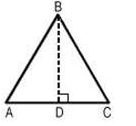

Triangle
Area of Triangle

A triangle is a polygon which has three sides and can be categorized into the follow types:
· An equilateral triangle has equal sides and equal angles.
· An isosceles triangle has two equal sides and two equal angles.
· A scalene triangle has three unequal sides and three unequal angles.
· A right-angled triangle has one right angle (90°).
· An acute-angled triangle has all angles less than 90°.
· An obtuse-angled triangle has one angle greater than 90°.
The perimeter of a triangle = Sum of three sides
In the figure alongside of the ΔABC, the perimeter is the sum of AB + BC + AC.
Area of a triangle is given by:
A = ½ × Base × Height
Any side of the triangle may be considered as its base.
Then, the length of the perpendicular line from the opposite vertex is taken as the corresponding height or altitude.
In the figure shown above the area is thus given as: ½ × AC × BD.
Additional formulas for determining the area of a triangle:
Area of a triangle = √(s(s-a)(s-b)(s-c)) by Heron's Formula (or Hero's Formula), where a, b and c are the lengths of the sides of the triangle, and s = ½ (a + b + c) is the semi-perimeter of the triangle.
Area of an equilateral triangle
A= √(3) · ¼ · side, where side = a = b = c
Area of an isosceles triangle
A = ¼ ·b · √(4a2 – b2)
Area of the right angled triangle
A= ½× Product of the sides containing the right angle.
If two sides and the angle between them are given then the area of the triangle can be determined using the following formula:
Area = ½ · a · b · sinC = ½ · b · c · sinA = ½ · a · c · sin B
Example 1: Find the area of a triangle whose base is 14 cm and height is 10 cm.
Solution:
b = 14 cm
h = 10 cm
A = ½ · 14 · 10 = 70 cm2
Example 2: Find the area of a triangle whose sides and the angle between them are given as following:
a = 5cm and b = 7cm
C = 45o
Solution:
Area of a triangle = ½ · a · b · sinC
Area = ½ × 5 ×7 × 0.707 (since sin 45 ° = 0.707)
Area = ½ × 24.745 = 12.3725 m2
Example 3: Find the area (in m2) of an isosceles triangle, whose sides are 10 m and the base is12 m.
Solution:
The area of an isosceles triangle is determined by:
A = ¼ ·b · √(4a2 – b2)
A = ¼ ·12 · √(4(10)2 – (12)2)
A = 48 m2
Example 4: Find the area of a triangle whose sides are 8, 9 and 11 respectively. All units are measured in meter (m).
Solution:
Given: sides a = 8, b = 9 and c = 11
According to Heron’s Formula the area of a triangle can be determined using the following formula:
A = √(s(s-a)(s-b)(s-c))
First of all, we need to determine the s, which is the semi-perimeter of the triangle:
s = ½ (a + b + c) = ½ (8 + 9 + 11) = 14
Now by inserting the value of the semi-perimeter into the Heron’s formula we can determine the area of the triangle:
A = √(s · (s-a) · (s-b) · (s-c))
A = √(14 · (14-8) · (14-9) · (14-11))
A = √(1260 ) = 35.50 m2
Example 5: Farmer Munnabhai owns a triangular piece of land. The length of the fence AB is 150 m. The length of the fence BC is 231 m. The angle between fence AB and fence BC is 123º.
How much land does Farmer Munnabhai own?
Solution: First of all we must decide which lengths and angles we know:
AB = c = 150 m
BC = a = 231 m
and angle B = 123º
To determine the area of the land, we can use the following formula:
Area = ½ · c · a · sin B
Area = ½ ×150 × 231 × sin(123º )
Area = 17,325 ×0.8386
Area = 14,529 m2
Therefore, farmer Munnabhai has 14,529 m2 of land.